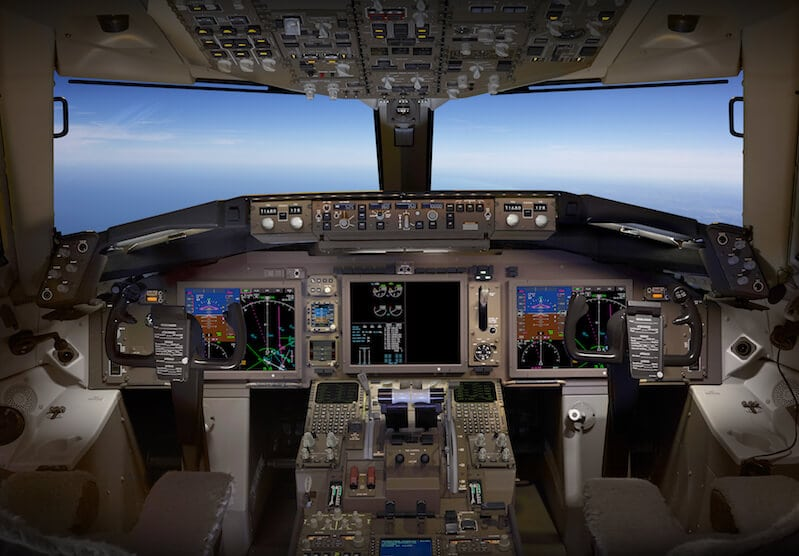

DESIGN
According to Boeing in a documentary on the 777, the brown color scheme was chosen based on surveys with pilots on it being pleasing and not hard on the eyes and for the fact it would show dirt the least
OTHER FLEET
737
757

The Boeing 757 is an American narrow-body airliner designed and built by Boeing Commercial Airplanes. The then-named 7N7, a twinjet successor for the 727, received its first orders in August 1978. The prototype completed its maiden flight on February 19, 1982 and it was FAA certified on December 21, 1982
Arlington, Virginia, United States
Follow Boeing


Copyright © 1995 - 2023 Boeing. All Rights Reserved.